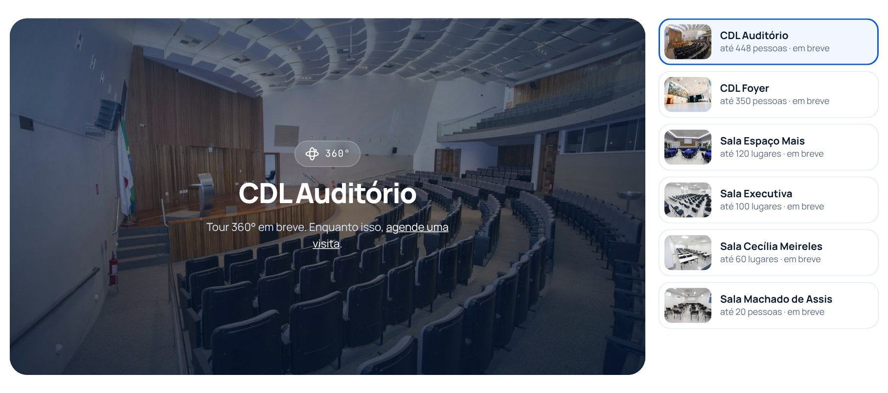
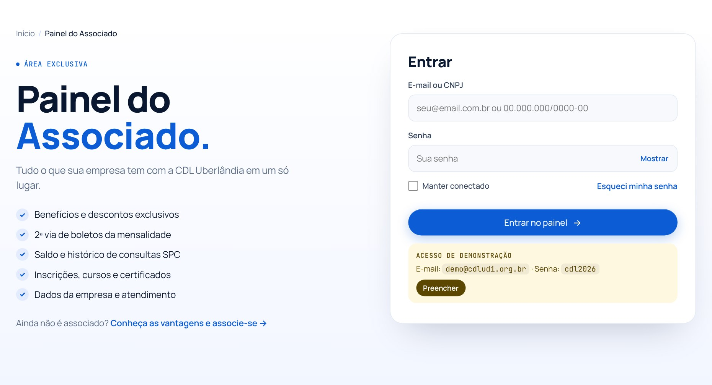
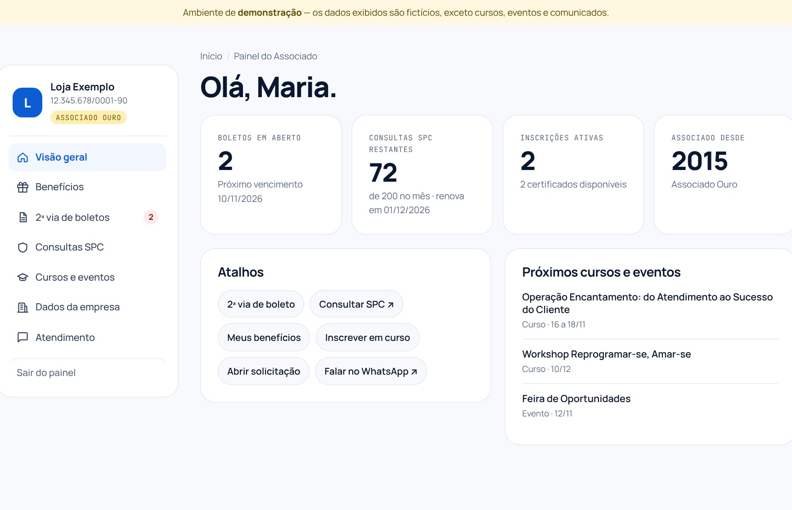
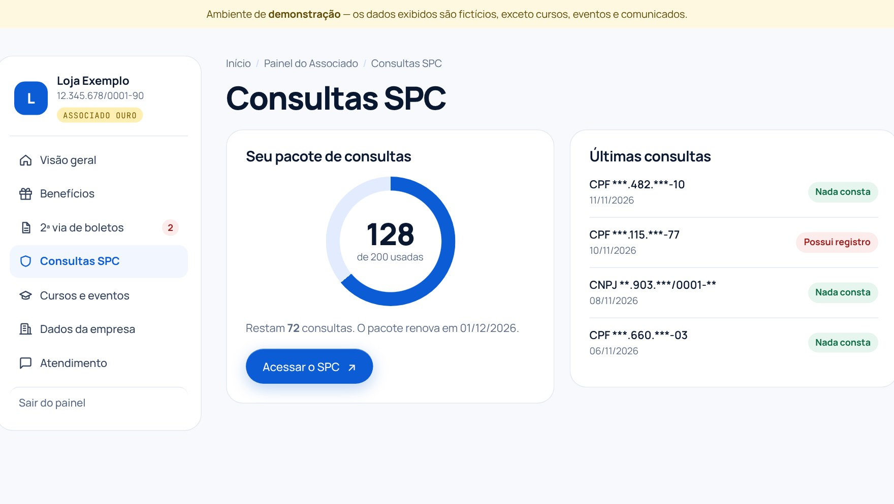
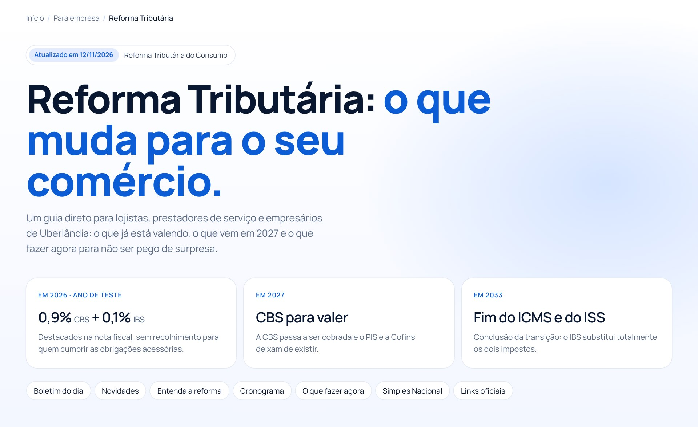
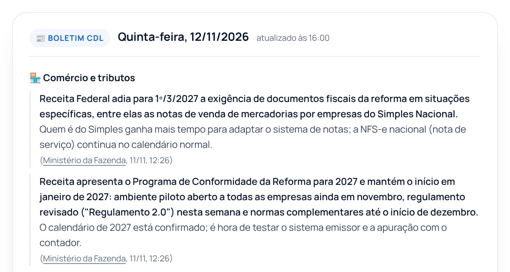
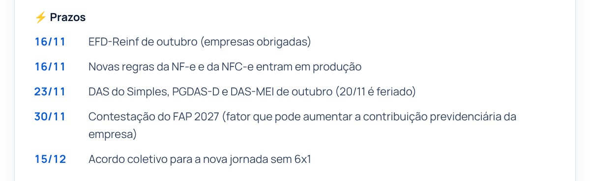
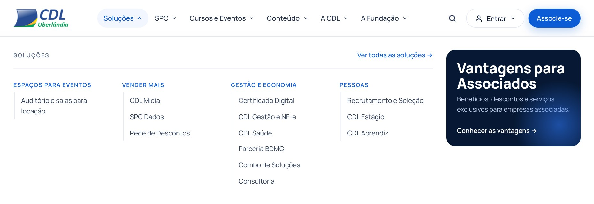
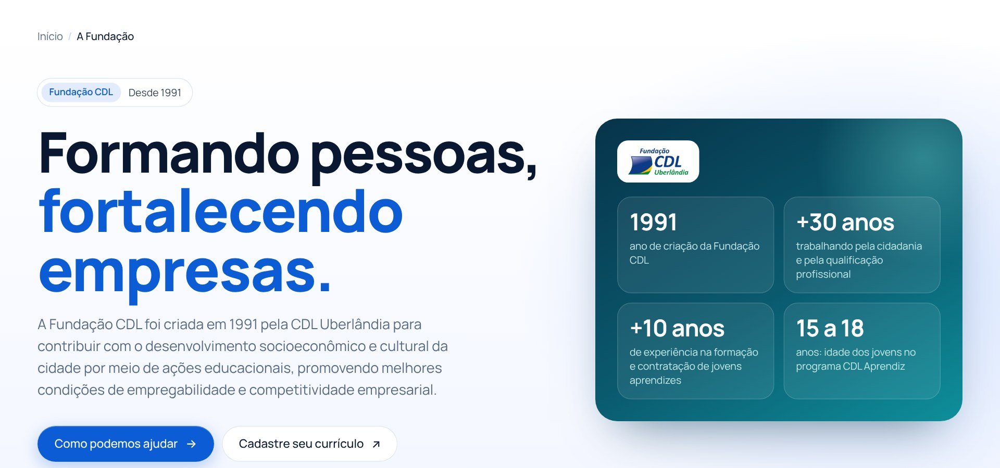

Novo visual, vitrine da Loja integrada, preparação para buscadores e IAs, tour 360° dos espaços, guia da Reforma Tributária com boletim diário, menu reorganizado e Fundação CDL.
Todos versionados no Git
Telas novas em Views/Paginas
Eventos, cursos, EAD, descontos e parceiros
652 arquivos alterados
Site MVC + API em camadas, sem troca de stack.
Google Analytics, Facebook Pixel, Clarity, RD Station e selo GoDaddy.
O conteúdo do Portal continua alimentando o site.
/loja com eventos, cursos e EADllms.txt, robots.txt e sitemap.xml
O visitante conhece o espaço antes de reservar: arrasta para olhar em volta, aproxima e abre em tela cheia.
CDL Convenções e os 6 espaços, com botão “Tour 360°” no topo de cada página.
Foto panorâmica 2:1 em img/360/{espaço}.jpg. O site detecta sozinho.
Sem a foto, mostra a capa com “em breve” e o link para agendar visita.
O Pannellum só é baixado ao clicar em “Iniciar tour”. A página segue leve.
Fotos de conteúdo abrem ampliadas, com zoom (inclusive pinça no celular), teclado e download. Substitui a galeria dos espaços, que não abria.
Campanha com link leva ao destino cadastrado no Portal (externos em nova aba). Sem link, fica só como imagem.
Um espaço único onde a empresa associada resolve sozinha o que hoje depende de ligação, e-mail ou ida à sede.


Boletos em aberto, consultas SPC restantes, inscrições ativas, atalhos e próximos cursos e eventos.
Os 8 benefícios do plano (jurídico, SPC, descontos, cursos, certificado, salas, saúde, mídia), cada um com link para usar.
Mensalidades com vencimento, valor e situação. Botão para copiar a linha digitável.
Medidor do pacote do mês, data de renovação, últimas consultas com o resultado e acesso direto ao SPC.
Inscrições, certificados dos cursos concluídos e agenda aberta, lida ao vivo da Loja CDL.
Cadastro da empresa e usuários com acesso ao painel (administrador, financeiro, SPC).
Abrir solicitação, ver protocolos anteriores, comunicados e falar no WhatsApp com o relacionamento.
Boleto, saldo SPC e certificado deixam de exigir contato com a equipe.

Uma empresa de teste (“Loja Exemplo”) com dados de exemplo. Cursos, eventos e comunicados já vêm das APIs reais. Formulários confirmam o envio, mas nada é gravado.
Login por cookie protegido (HttpOnly), proteção contra envio forjado de formulário, páginas fora do Google e dos robôs de IA.
Trocar o serviço de demonstração pela base de associados, boletos do financeiro e saldo do SPC; criar cadastro e recuperação de senha.

O resumo do dia: tributos, Congresso, Justiça e prazos, sempre com fonte.
“Já aconteceu” e “Próximas datas”, em ordem de calendário (ex.: NF-e de 16/11, Simples até 30/11).
Saem PIS, Cofins, IPI, ICMS e ISS; entram CBS, IBS e Imposto Seletivo. Crédito amplo, cobrança no destino, cashback.
Do ano de teste (0,9% CBS + 0,1% IBS) ao fim do ICMS e do ISS em 2033.
8 passos: contador, sistema de notas, cadastro de produtos, caixa de 2027, contratos, fornecedores, testes e equipe.
As duas opções para IBS/CBS (dentro ou fora do DAS) e os prazos de escolha.
Imposto separado na hora do pagamento: facultativo em 2027, obrigatório previsto para 2028.
EC 132, LC 214 e 227, regulamentos, notas técnicas, portais, manuais e curso gratuito do CFC.
A página entrou na busca do site e nos arquivos de GEO.
Campanhas, Notícias e Acesso rápido após o Termômetro, que agora pode ser ocultado.
Mostra sozinho o próximo curso ou evento da Loja; sem resposta em 2 s, leva à agenda.


Comércio e tributos (até 5), PECs e legislação (até 3), Jurídico (até 3) e Prazos. Cada fato vem com o impacto para o lojista, a fonte e a data.
Os boletins ficam em dados/boletim-reforma.json, o mais recente primeiro. Basta editar o arquivo para a página mudar.
A página mostra o do dia e guarda os 14 anteriores. Dia sem novidade aparece como “Sem novidades hoje”.
Janela das últimas 24 a 48 horas e só o que afeta o comércio: caixa, nota fiscal, Simples/MEI, IBS/CBS, crédito, prazos e decisões que pesam no varejo.
Comitê Gestor do IBS, Receita Federal, Ministério da Fazenda, Planalto e Agência Brasil.
Consultor Tributário, Portal Tributário e Jornal Contábil.
CNDL e Sebrae.
Dados abertos da Câmara (PECs da semana) e Agência Senado.
Conjur, Migalhas e notícias do STF e do STJ.
Só fatos, números, prazos e links que vieram das fontes.
Valores da reforma só depois de conferidos na Receita ou no CGIBS.
Siglas explicadas na primeira vez; tom neutro, sem alarmismo.
Toda PEC com a etapa real: comissão, plenário ou arquivada.

Soluções, SPC, Cursos e Eventos, Conteúdo, A CDL e A Fundação. Cada aba tem um atalho em destaque à direita.
Área do associado (Painel) e Acesse o SPC ficam juntos no topo.
Redes sociais foi para Conteúdo; Rita Saúde e CDL IA saíram do menu.
Os títulos azuis do menu levam a páginas de tema (ex.: /vender-mais, /pessoas, /spc-para-voce) e cada aba tem uma página de visão geral, com cards que explicam cada serviço usando o texto da própria página.

Apresenta a Fundação (desde 1991), os números e dois caminhos: para empresas (aprendiz, estágio, talentos, in company) e para jovens (formação e vagas).
Aprendizagem, empregabilidade, cidadania e qualificação; missão, visão e valores.
A diretoria da Fundação tem página própria, separada da diretoria da CDL.
Ordem da home inspirada na CDL BH, com fundos alternados entre as seções:
Vantagens para Associados, SPC Brasil, Jovem Aprendiz (empresa e jovem), CDL Mídia e Redes sociais.
Redes sociais mostra vídeos do YouTube e do Facebook; CDL Mídia destaca o @cdlmidiaudi.
“Mais procurados” ao abrir e sinônimos: “nome sujo” leva à Consulta CPF; “negativar cliente”, ao SPC.
Boletins de 9 a 13/11 e uma seção própria de Prazos na página.
Generative Engine Optimization: preparar o site para que ChatGPT, Claude, Perplexity, Gemini, Copilot e as respostas com IA do Google encontrem, entendam e citem a CDL com os dados certos.
| Item | Antes | Agora |
|---|---|---|
/robots.txt | Não existia | Libera 16 robôs de busca e IA, bloqueia áreas privadas |
/sitemap.xml | Não existia | 60 páginas fixas + todas as publicações, com data |
/llms.txt | Não existia | Resumo do site em Markdown para assistentes de IA |
| Dados estruturados | Um bloco fixo, logo com endereço relativo | Organization, LocalBusiness, WebSite, WebPage, trilha e NewsArticle |
| Canonical e compartilhamento | Ausentes | Canonical, Open Graph e Twitter Card em todas as páginas |
| Indexação | Sem regra | noindex na busca e no painel; trechos e imagens grandes liberados |
Dados da entidade, perguntas frequentes, as 60 páginas com descrição e as 15 publicações mais recentes.
# CDL Uberlândia > Associação privada sem fins lucrativos, > fundada em 1977, integrante do Sistema CNDL… ## Perguntas frequentes - **Como consultar se meu nome está no SPC em Uberlândia?** Gratuita na sede…A IA responde com endereço, telefone e link certos.
16 robôs liberados pelo nome (OpenAI, Anthropic, Perplexity, Google, Bing, Apple…). Painel, API e busca bloqueados.
User-agent: GPTBot Allow: / Disallow: /painel-associado Disallow: /api/ Sitemap: https://cdludi.org.br/sitemap.xmlConteúdo público liberado; área privada fora dos resultados.
Páginas fixas e todas as publicações lidas da API, com data e prioridade. Cache de 1 hora.
Matéria nova entra no mapa em até 1 hora, sem ninguém editar arquivo.Razão social, apelidos (CDL UDI), endereço, telefones, horário, CNDL como organização-mãe e redes sociais.
Google e IAs ligam todos os nomes à mesma entidade.Título, resumo, imagem, data com fuso -03:00, seção e contagem de palavras.
Link no WhatsApp mostra foto e título da matéria.{ "@type": ["Organization", "LocalBusiness"], "name": "CDL Uberlândia", "alternateName": ["CDL UDI", "CDL Uberlandia"],
"foundingDate": "1977", "telephone": "+55 34 3239-3400", "parentOrganization": { "name": "CNDL …" }, "knowsAbout": ["SPC Brasil", …] }
“Onde consulto meu CPF no SPC em Uberlândia?”
O robô lê /robots.txt e vê que pode acessar.
Lê /llms.txt e /sitemap.xml e acha /spc-consulta.
O JSON-LD confirma endereço, telefone e horário.
A IA responde com os dados da CDL e o link como fonte.
/llms.txt · /robots.txt · /sitemap.xml no navegador; Teste de pesquisa aprimorada do Google e validator.schema.org.
Página nova em Views/Paginas? Incluir em GeoCatalogo.cs. Publicações entram sozinhas.
Aumenta a chance de citação correta, mas não garante posição. O efeito aparece em dias a semanas.
Cada commit da reformulação, na ordem em que foi feito, com o tipo de mudança e o tamanho da alteração. Os dados são refeitos a cada push no master.
Soma por commit
C# sobre .NET 8: front-end ASP.NET Core MVC e API REST em camadas, com MySQL 8 pelo Entity Framework Core.
Post, PostCategoria, Paginas, Banner e interfaces dos repositórios.
Serviços Home, Page e Post, DTOs e AutoMapper 13.
EF Core 8.0.10 + Pomelo MySQL, repositórios e 11 migrations.
Controllers Banner, Home, Page e Post. Swagger em desenvolvimento.
| Linguagem | C# · .NET 8 (SDK 8.0.420) | Front-end | ASP.NET Core MVC + Razor |
| Estilo e scripts | CSS e JavaScript puros | Banco | MySQL 8 via Docker Compose |
| Bibliotecas | AutoMapper · Magick.NET · Newtonsoft.Json | Autenticação | Cookie do ASP.NET Core (painel) |
MySQL 8, base SiteCDL. O conteúdo vem do Portal da CDL; o site só lê, exceto leads.
| Tabela | Principais campos | Quem usa |
|---|---|---|
| Post | Titulo, Slug, Conteudo, Imagem, Data, Status, PostCategoriaCodigo | Publicações, busca, sitemap, llms.txt |
| PostCategoria | Nome, Controller, Route | Rotas /publicacoes/{rota} |
| Paginas | Titulo, Conteudo, Slug, Seo, Status | Páginas sem tela nova |
| Banners | Nome, CaminhoDesktop, CaminhoMobile, Link, DataInicio, DataFim | Carrossel da home |
| Lead | Dados do contato | /kommo/Leads (grava) |
Páginas completas no repositório em docs/apresentacao: visão geral, GEO, esteira e estrutura.